Carnet · Comparer, le prix, Choisir · tour 2 · 21.11
6 mini maquettes retouchées sur ta Chambre froide : trois articles, au repos, sans prix et avec un prix en euros. Trois autres sont écartées, avec leur raison.
Tes mots du 21.11 sur le carnet
« Plusieurs problèmes dans le carnet, il ya même pas le prix de la chambre froide ?? »
« Il y a une vue lors de la création ??? Mais qui s'ouvre même pas automatiquement et qui change par la suite ?? »
« Et le fait qu'il y aille un trou, que on voie que 3 truc et que il y a pas de filtre, rien, personnes a vue ça ? »
« Que si on clic là ça renvoie même pas sûr le carnet ? »
« Et la plupart des petites improvement sont aussi sans la nécessité de mini maquettes, parcontre peut être attendre un certain temps car SI ont choisi des mini maquettes qui remplace complément certains actions, vue où autre, ça vaut pas la peine de résoudre certains "faux" problème »
A · Comparer
Comment tes articles se comparent, et ce qui les classe. Une version par axe.
Référence


A1Colonnes-cartes
Tes trois articles en colonnes ; l'épingle pleine sur une ligne la fait classer, la chaîne dit l'ordre. Un « 1 » plein marque le gagnant.
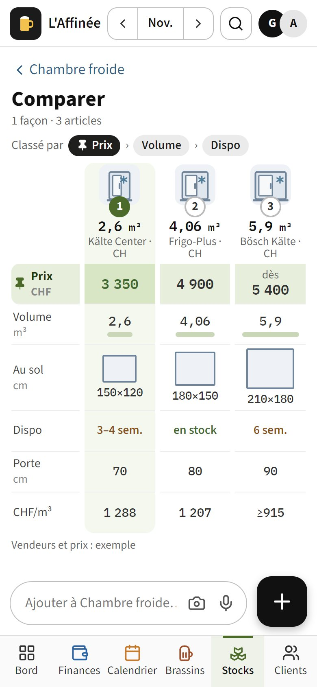
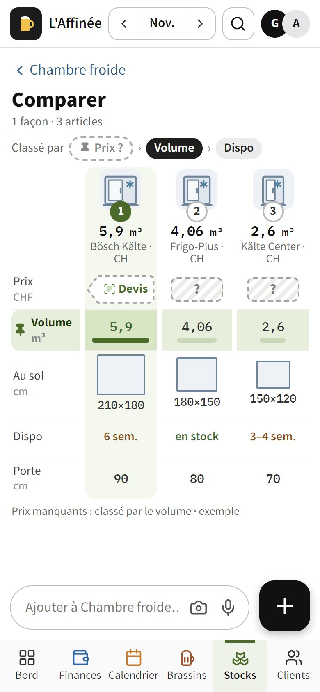
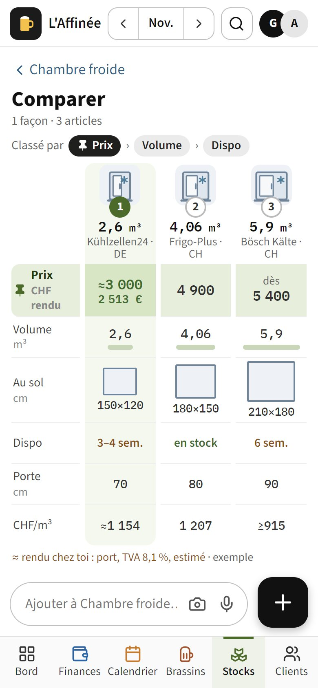
A2 écartée : la barre change de sens selon l'épingle (au prix, la plus longue est la plus chère ; au volume, la meilleure) et le volume revient deux ou trois fois par carte. Ses puces numérotées restent à greffer si tu les veux.
A3Bandes par attribut
Une bande par critère, les articles toujours dans l'ordre du classement, nommés au bout de chaque barre ; plan au sol à l'échelle, dispo en semaines depuis aujourd'hui.
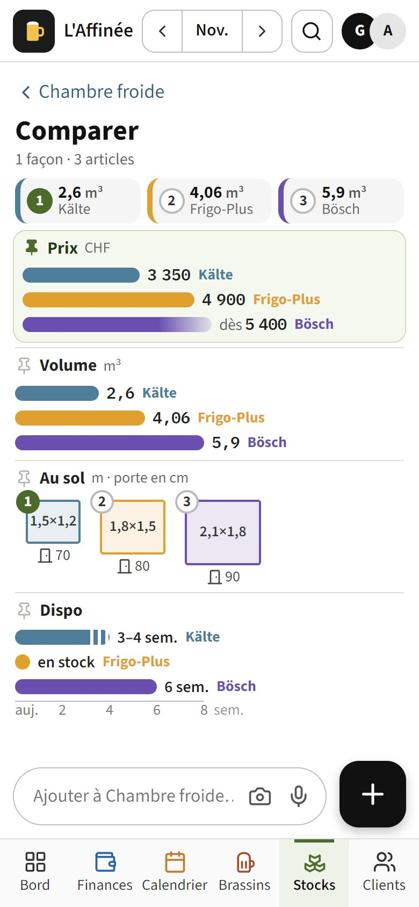
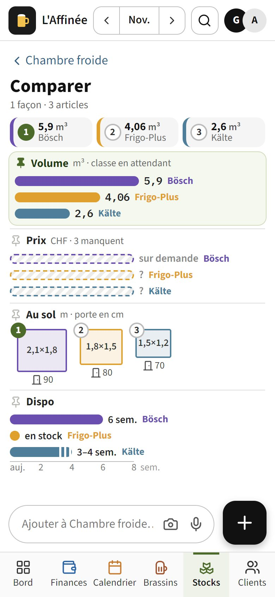

B · Le prix
Où se lit le prix, et ce qu'il devient quand il manque ou qu'il est en euros. Une version par axe. Le rond de rang suit le classement de Comparer (le prix épinglé) ; la puce verte ne dit que le volume.
Référence
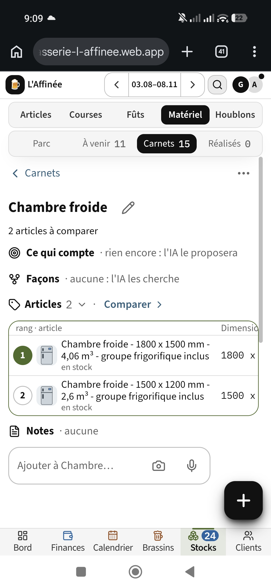

B1Pastille de prix
Le prix en pastille sur la ligne de l'article ; pointillée « CHF ? » s'il manque, brune si estimée. En euros, la décomposition se replie sous la pastille, tout en CHF.


B2 écartée : une barre pleine largeur ajoute environ 50 px par carte, et la comparaison des prix doublonne Comparer. Son état « sans prix » (Saisir, Devis) est repris dans B3.
B3Étiquette accrochée
Une étiquette de magasin pend à chaque article ; en euros, l'étiquette € derrière, le CHF rendu devant ; toucher l'étiquette ouvre la barre article · port · TVA, en CHF.

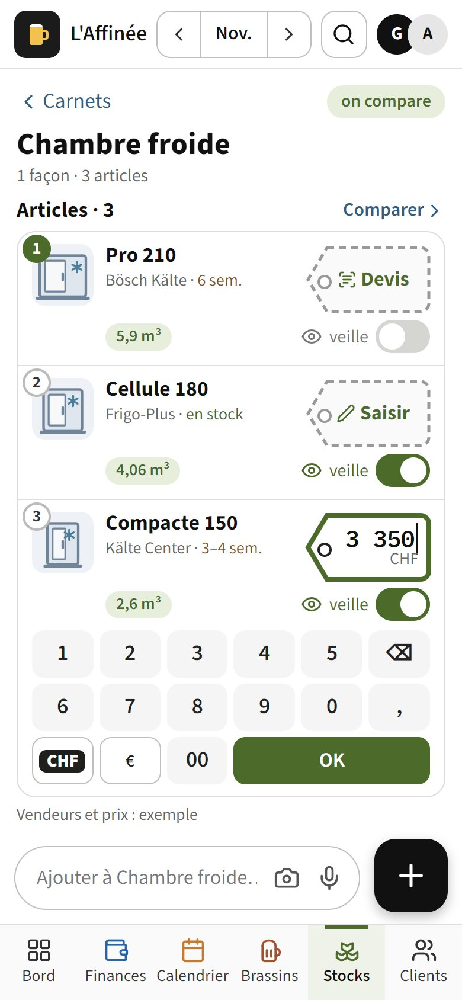
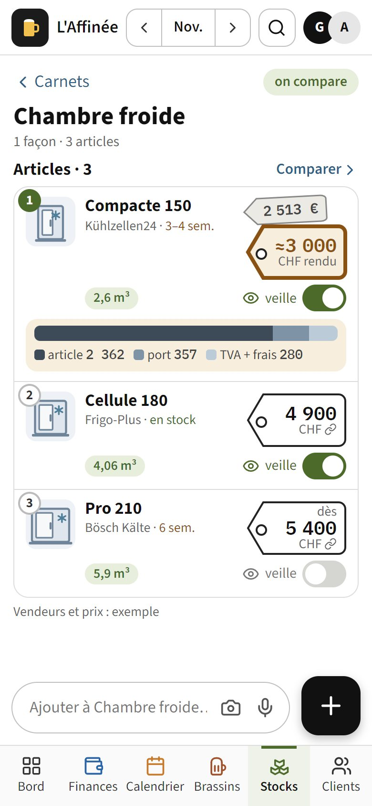
C · Choisir → À venir
Ce que fait Choisir : l'achat part dans À venir, au mois que tu choisis. Aucun verdict de caisse dans le carnet. Une version par axe.
Référence

C1Prix › livré › À venir
Trois cases en chemin : le prix (étiquette), la livraison, puis le mois d'À venir, case bleue que tu choisis (⌄). Les ronds de rang des articles sont conservés.
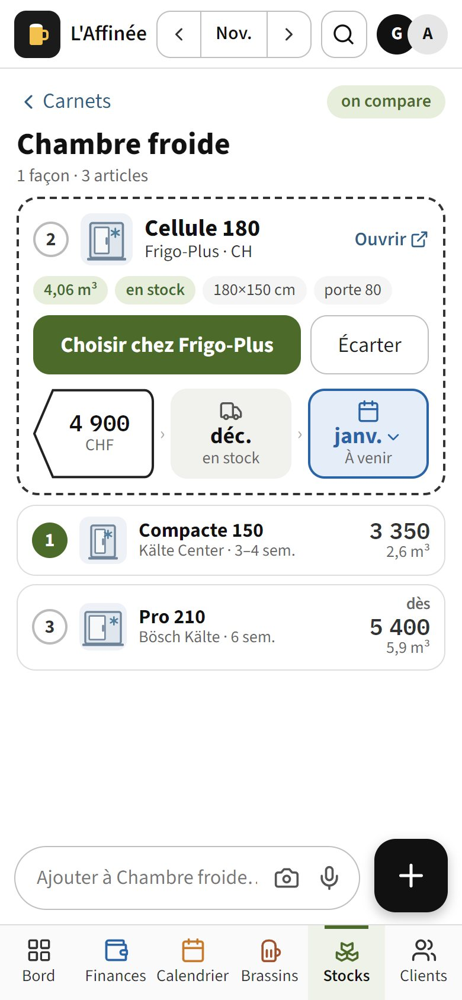
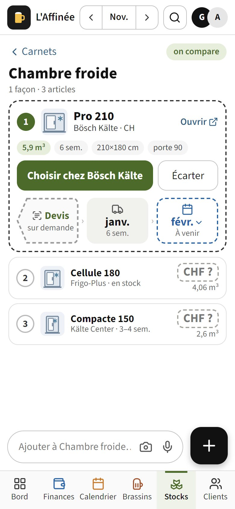
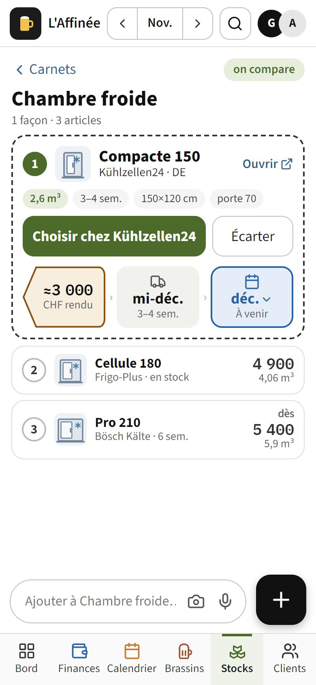
C2 écartée : la frise « payable / trop juste » est la caisse dans le carnet, qui n'y a pas sa place ; sans prix, six cases « ? » n'apprennent rien. Le calendrier de l'achat est mieux montré dans C3.
C3Après Choisir
La carte choisie passe au bleu d'Achats, garde le modèle en titre et le prix à côté ; l'achat est un jalon sur la rangée Achats du Calendrier, avec Annuler.
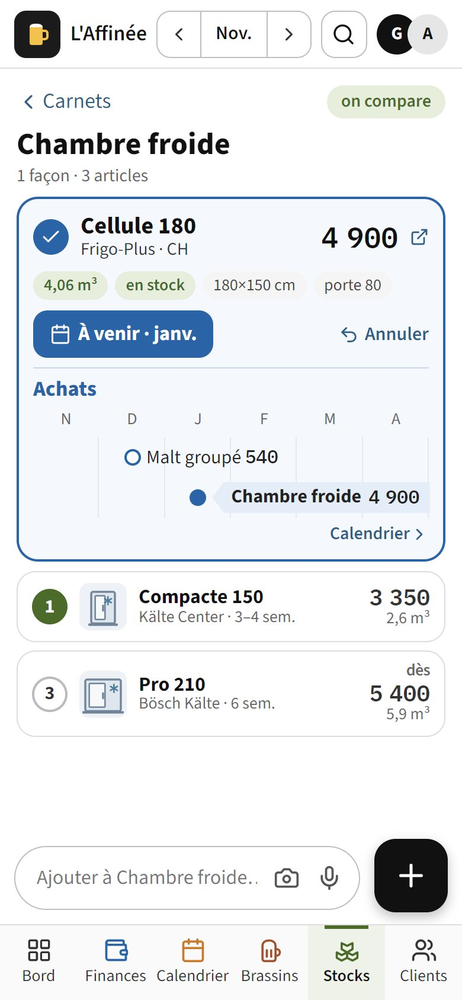
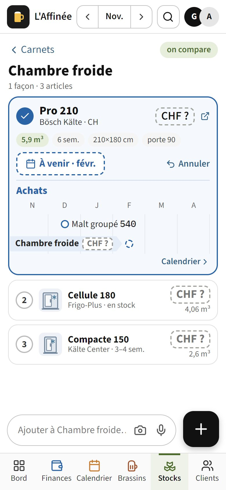
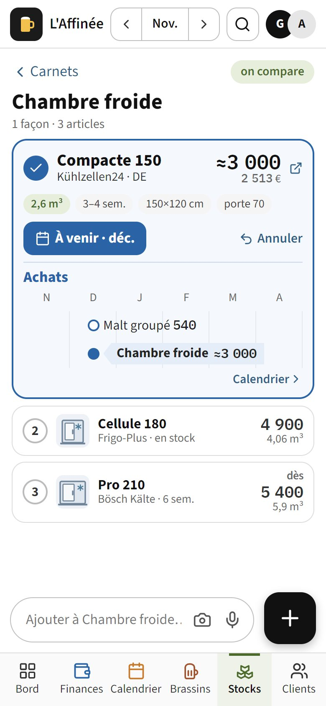